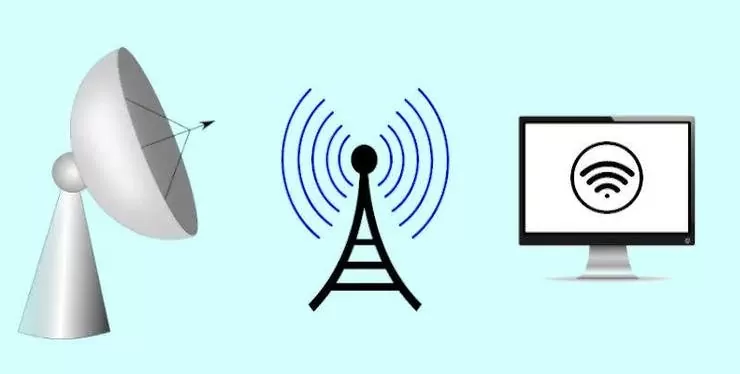
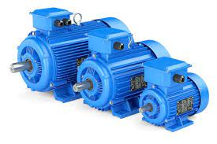
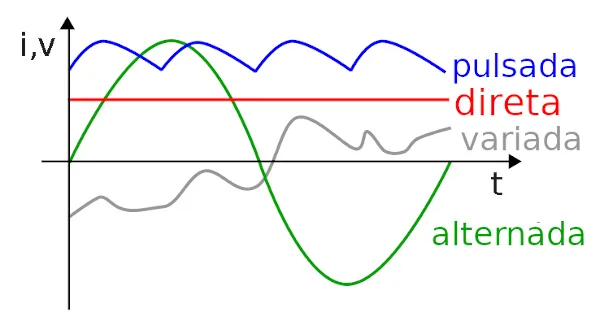
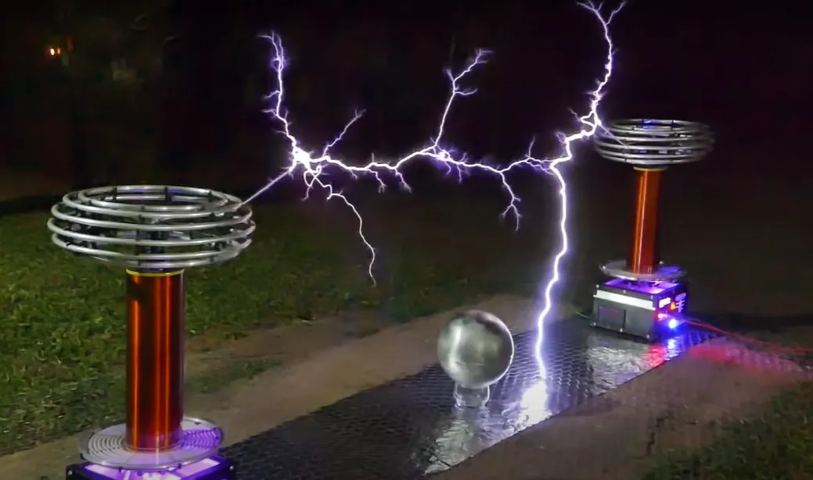

O inicio de tudo
Nikola Tesla nasceu na aldeia de Smiljan, durante o Império Austro-húngaro, na atual Croácia, no dia 10 de julho de 1856. Filho de um sacerdote ortodoxo, desde pequeno, foi treinado por seu pai para desenvolver a memória e o raciocínio. Sua mãe era descendente de família de inventores. Durante sua infância dizia que via flashes de luz que apareciam diante de seus olhos.

Em 1882, Tesla descobriu o campo magnético rotativo, um princípio fundamental da física e da base de todos os dispositivos que usam correntes alternadas. Nesse mesmo ano, trabalhou na Companhia Continental Edison, em Paris. Dois anos depois, foi convidado para trabalhar na firma de Thomas Edison (1847-1931) em Nova Iorque, para onde se mudou.
E quem não conhece a historia com Thomas ??? As divergências de opinião entre Tesla e Thomas Edison, sobre corrente contínua, foi o motivo do desentendimento entre eles. Tesla havia criado ferramentas para tornar viável o uso da corrente alternada, uma forma eficiente de transmitir energia a grandes distâncias, mas perigoso em caso de acidente. Edison, que baseava suas tecnologias na corrente contínua, era contra a “corrente assassina de Tesla”. A corrente alternada de Tesla é a que hoje corre nos fios de alta tensão do planeta.

Invenções e Patentes
As pesquisas e descobertas de Tesla têm grande importância para a eletrotécnica e a radioeletricidade. Ao todo, Nikola Tesla registrou cerca de 40 patentes nos Estados Unidos e mais de 700 no mundo todo. Suas invenções foram focadas na utilização da eletricidade e magnetismo, entre eles: a lâmpada fluorescente, o motor de indução (utilizado em indústrias e em vários eletrodomésticos) , o controle remoto, a Bobina Tesla, transmissão via rádio, o sistema de ignição utilizado nas partidas dos carros, a corrente alternada etc.
- Lâmpada fluorescente.
- Transmissão via rádio.
- Controle remoto.
- Motor de indução.
- Corrente alternada.
- Sistema de Ignição.
- Bobina de Tesla.
Qual é a lâmpada fluorescente? Resultado de imagem para Lâmpada fluorescente A lâmpada fluorescente é um tipo de lâmpada criada por Nikola Tesla, introduzida no mercado consumidor em 1938. Ao contrário das lâmpadas de filamento, possui grande eficiência por emitir mais energia eletromagnética em forma de luz do que calor.

A vibração mecânica do diafragma do microfone gera uma corrente elétrica que varia de acordo com a frequência e a amplitude da onda sonora. Essa corrente, depois de devidamente processada, origina uma onda eletromagnética correspondente, que é transmitida pela antena da estação radiofônica.
Em eletrônica de consumo, controlo remoto ou controle remoto, telecomando ou ainda comando à distância é um aparelho utilizado para realizar uma operação remota a um dispositivo eletrônico.
Motor de indução é um tipo de motor elétrico que possui dois campos magnéticos girantes. Também conhecido como motor de corrente alternada (AC) ou motor assíncrono trifásico. Esse dispositivo é composto por duas partes que funcionam simultaneamente: um rotor (elemento móvel do motor) e um estator (elemento fixo).
A corrente alternada (CA ou AC – do inglês alternating current) é uma corrente elétrica caracterizada por sua intensidade e direção que variam periodicamente – ao contrário da corrente contínua –, sendo capaz de ser transportada por longas distâncias, portanto, sendo a mais utilizada em grandes potências.
A função mais básica de um sistema de ignição de carro é gerar fogo em formato de faísca, o qual queimará a mistura de ar e combustível e, consequentemente, irá gerar o calor que movimenta os pistões.

A bobina de Tesla funciona como um transformador, ou seja, um instrumento que modifica os níveis de tensão, aumentando, e corrente elétrica, diminuindo, e mantendo a potência quase constante. Capaz de gerar uma tensão muito alta com grande simplicidade de construção, provocando descargas elétricas.
Prêmios
Em 1894, Nikola Tesla recebeu o título Honoris Causa pela Universidade de Columbia, e a medalha Elliot Cresson, pelo Instituto Franklin. Em 1912, Tesla recusou-se a dividir o Prêmio Nobel de Física com Edison, o que acabou sendo dado a outro pesquisador. Em 1934, a cidade da Filadélfia concedeu-lhe a medalha John Scott pelo seu sistema de energia polifásico . Nikola era membro honorário da Associação Nacional de Luz Elétrica e membro da Associação Americana para o Avanço da Ciência.
Morte
Em uma noite de outono de 1937, aos 81 anos, depois da meia-noite, Tesla deixou o Hotel New Yorker para ir regularmente à catedral e à biblioteca para alimentar os pombos. Ao atravessar uma rua a alguns quarteirões do hotel, Tesla não conseguiu desviar de um táxi em movimento e foi jogado no chão. Suas costas estavam gravemente feridas e três costelas foram quebradas no acidente. A extensão total de seus ferimentos nunca foi conhecida; Tesla se recusou a consultar um médico, um costume que desenvolveu ao longo da vida, e nunca se recuperou totalmente

Em 7 de janeiro de 1943, aos 86 anos de idade, Tesla morreu sozinho no quarto 3327 do New Yorker Hotel. Seu corpo foi encontrado mais tarde pela empregada Alice Monaghan depois que ela entrou no quarto de Tesla, ignorando o sinal de "não perturbe" que ele havia colocado em sua porta dois dias antes. O examinador médico assistente H. W. Wembley examinou o corpo e decidiu que a causa da morte havia sido trombose coronariana.
Espero que tenham gostado do conteudo, essa foi um pouco sobre a vida de Nikola Tesla